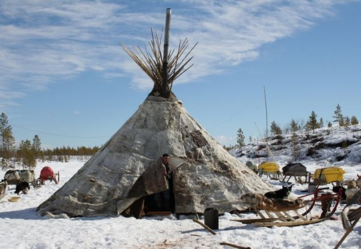
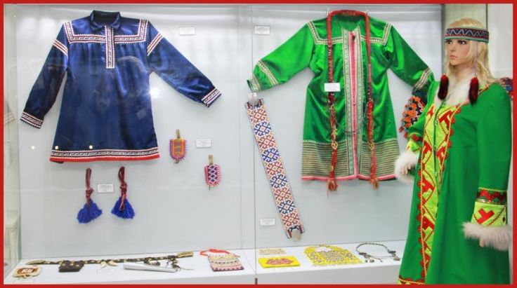

У народа ханты есть обычаи и традиции, связанные с жилищем, одеждой, кухней и религией.
Чум — традиционное жилище хантов, которое используется при кочевом образе жизни. Некоторые особенности чума:
Конусообразная форма — это чтобы на жилище не скапливался снег, и чум под его тяжестью не проседал.
Летом чум обычно покрывают корой или грубой тканью, вход также завешивают тканью. Зимой для утепления его отделывают шкурами животных, которые сшиваются в одно целое полотнище.
В центре чума находится очаг, который служит источником тепла и приспособлен для приготовления пищи. Очаг может быть открытым и располагаться на железном листе или в виде отопительно-варочной печки с дымоходом.
У каждого человека и каждой вещи в чуме есть определённое место. Например, слева от дверей — женское место со всеми кухонными атрибутами и продуктами, по бокам — постель хозяев, справа от двери — место для детей или ближайших родственников.
Как выглядит Чум:

Одежда
Некоторые особенности национальной одежды хантов:
Северные ханты носили глухую одежду без разреза спереди трёх видов: малица, «гусь» (он же кумыш) и парка. Чаще всего малицу шили мехом внутрь, поверх неё надевали «гусь» мехом наружу.
У южных хантов шубы были распашными, из оленьего и заячьего меха, беличьих и лисьих лапок.
Женщины носили распашную шубку — ягушку (другое название — сах). Зимний вариант был двухслойным: оба из оленьих шкур, или нижний — из заячьих и беличьих шкурок, утиных, гагарьих и лебединых шкурок.
Особенность — богатая орнаментация. Узорами украшали одежду, обувь, рукавицы, головные уборы. Хантыйские узоры делились на две большие группы: «след» и «изображение». Первые орнаменты задавали контур, бордюр узора, по виду напоминали лапы и когти животных и птиц, второй тип — изображения — это отпечатки «духа» животного или растения, например «крыло гуся», «голова кедровки», «заячьи уши»

Праздники
Вороний день» (Вурна Хатл) — праздник наступления тепла, о котором возвещают вороны. Прилёт вороны связывается с приходом весны и тепла, ведь именно вороны прилетают первыми, начинают вить гнёзда и громко каркают, пробуждая природу. В этот день нельзя шить, рубить лес, колоть дрова. На ветки берёзы вешают связки калачей и баранок, а также лоскутки из ткани с завязанными в них монетами.
День оленевода — ежегодный национальный праздник, который проводится в феврале–марте. Главное зрелище — гонки на оленях (рысью, махом, стоя на нартах). Одновременно с гонками проходят соревнования по традиционным северным видам спорта: прыжки через нарты, бег на охотничьих лыжах, стрельба, метание топора на дальность.